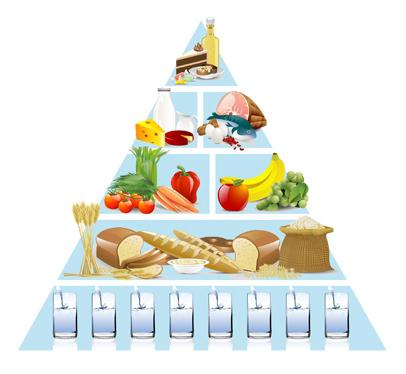

Welcome to tinkamos mitybos maistas
Tinkamos mitybos pasirinkimas - Temos - Ligos, sveikata, vaistai - Manosveikata.lt
2020.10.30 03:10Facebook Youtube Reklama RSS Spalio 30d. Penktadienis Pradžia Temos Ligos Vaistai TLK Aktualijos Video
Tinkamos mitybos pasirinkimas
2012 Spalio 31d. Peržiūrų skaičius: 24644Jūs priaugote svorio ir nusprendėte, kad jums gana. Laikas imtis kontroliuoti savo mitybos įpročius. Didysis klausimas – nuo ko pradėti? Ypač jei jūs neturite pakankamai žinių apie tai, kokius maisto produktus jums reikėtų valgyti.
Ar jūs kada nors pagalvojote, kad yra labai daug žmonių, kurių didžiąją mitybos dalį sudaro greitas maistas? Išalkę jie nuolatos ieško greito maisto restoranų. Jų mityba sudaro išimtinai vien tik greitas maistas, arba jis sudaro didžiąją dalį jų mitybos. Šis maistas sukelia gausybę sunkių ligų. Dėka jo žmonės tampa nutukę. Ar jį apskritai galima valgyti? Taip, retkarčiais suvalgyti šio maisto nėra labai blogai. Bėdos prasideda tada, kai toks maistas yra valgomas nuolatos. Tai galioja visiems maisto gaminiams, kurie yra iš anksto paruošti vartojimui.
Kiek kartų jūs esate valgę greitą maistą ir labai greitai vėl pasijutę alkani? Taip yra dėl to, kad mūsų smegenims reikia 20 minučių tam, kad suprastų, jog mes suvalgėme maisto. Dauguma žmonių gali suvalgyti savo maisto patiekalą kur kas greičiau nei per 20 minučių, taigi jų smegenys nesupranta, kad maistas pateko į kūną ir sako "pamaitink mane!"
Dauguma žmonių pamiršo maisto gaminimo meną. Dar didesnė dalis žmonių šiuolaikiniame, greitame pasaulyje net neišmoko nuostabaus maisto gaminimo meno. Yra tokių žmonių, kurių gyvensena yra per daug užimta ir jie galvoja, kad maisto gaminimas nėra vertas jų brangaus laiko. Yra vaikų, kurie augdami nėra ragavę tikro maisto. Jie žino kas yra pica ar mėsainis, tačiau jie nėra matę sveikai paruoštos lašišos ar kitos žuvies patiekalo kartu su šviežiais žalumynais ir daržovėmis. Jei jie nėra ragavę tokių patiekalų būdami vaikai – kaip jie sugebės maitintis sveikai palikę namus ir maitinti savo vaikus? Vaikus reikia "programuoti" gyventi sveikai nuo pat vaikystės.
Ar mes turime mažiau laiko maisto gaminimui nei mūsų proseneliai? Atsakymas – ne. Mūsų darbo diena yra ilga – jų darbo diena taipogi būdavo ilga. Tačiau mes turime visus patogumus ir pagalbines priemones maistui gaminti namie, kurių jie neturėjo. Jie dirbdavo ilgai ir sunkiai, tačiau vis tiek sugebėdavo pasigaminti sveiką ir tikrą patiekalą kiekvieną dieną. Jie taip privalėjo daryti, nes greito maisto restoranų tada nebūdavo. Mes galime mėginti pateisinti tokį savo elgesį, tačiau mūsų kūnai tokio elgesio tikrai netoleruos. Per daug žmonių turi problemų su širdimi, diabetu, nutukimu ir dar daug daug kitų problemų. Dauguma bando valgyti mažiau, tačiau galutiniame rezultate – priauga dar daugiau svorio. Jie svarsto kodėl taip įvyko – todėl, kad kūnui reikia atitinkamo kiekio "degalų", kad galėtu pilnai funkcionuoti. Todėl jei mes versime savo kūnus funkcionuoti be "degalų", jis pats susiras kitą energijos šaltinį – pirmiausia tai bus mūsų liesa raumenų masė. Galiausiai kūnas supras šią būseną kaip badavimo ir viską ką mes valgome vers į riebalus tam, kad apsirūpintų energija.
Pamėginkite pavažiuoti su savo automobiliu be degalų, įsitikinsite, kad toli nenuvažiuosite. Taip pat, pamėginkite važiuoti su dideliu automobiliu, naudojant tiek pat kuro atsargų kaip, kad važiuojant mažu. Pažiūrėsite, kuris automobilis nuvažiuos toliau. Lygiai tas pats vyksta ir su mūsų kūnais, kuo mes sunkesni – tuo daugiau "degalų" mums reikia tam, kad mūsų kūnas pilnai funkcionuotų. Kai mes numetame svorį, mes galime sumažinti ir maisto kiekį, kurio mums reikia kasdien.
Tačiau ar jūs kada pagalvojote apie sveiką greito maisto mitybą? Kas turėtų ją sudaryti? Trumpai pagalvokite apie tai. Kas yra greitas maistas? Ką jis mums duoda?
Greitas maistas duoda jums maistą greitai, jis jums duodą trumpą/momentinį sotumo jausmą.
Geriausias greitas maistas yra tas, kurio pagaminimui reikia laiko. Tai nereiškia, kad galima pulti į parduotuves ir pirkti pačius didžiausius tortus, matant juos kaip greitą maistą, kurių gamybos procesas yra ilgas.
Šviežūs vaisiai ir daržovės yra pats geriausias greitas maistas, kokį tik jūs galite rasti. Imkite žalias daržoves ir kramsnokite jas per visą dieną. Suvalgykite keletą obuolių. Išmėginkite egzotiškus vaisius ir daržoves. Kasdien į savo mitybą pridėkite vis daugiau ir daugiau šių natūralių stebuklų. Pagalvokite prieš ką nors valgydami apie tai, ar šis maistas bus jums sveikas, kokios naudos jis jums duos. Nusilupti ananasą, bananą truks kur kas trumpiau nei laukti mėsainio greito maisto restorane. Jums tereikia nuspręsti nuo šiol rinktis tik sveikus ir naudos duodančius maisto produktus. O tai nėra taip sunku. Pradėkite savo tobulėjimą jau šiandien.
http://www.kunasvisamgyvenimui.lt
Žymės: mityba , sveika mityba , kaip maitintis , svorio reguliavimas
Kaip maitintis sveikiau?
Vaikų vegetarų nebūna
Vegetariška dieta vaikams nėra tinkama ir netradicinį gyvenimo būdą pasirinkę tėvai vaikams savų įpročių piršti neturėtų, teigia Lietuvos medikai. Vaikų teisių apsaugos kontrolieriaus įstaiga vis dažniau sulaukia gyventojų klausimų apie tėvų valia...
Pakeiskite savo mitybą jau šiandien ir tapkite sveikais!
Pastebėta, kad žmonės, kurie turi antsvorio (ar kokių kitų problemų susiejusių su antsvoriu) turi pačius blogiausius mitybos įpročius. Jie retai galvoja kaip pakeisti savo gyvenseną ir mitybos įpročius, kurie sukelia jiems tiek daug problemų....
Dažniausiai Pasitaikanti Dietos Klaida
Galbūt jūs ir valgėte pusryčius, tačiau vakare jūs būsite išbadėję jei dienos metu nevalgėte reguliariai. Jūs griebsite arčiausiai po ranka esantį maistą ir tiesiog kimšite į save. Įsivaizduokite, kad grįžę vakare po sunkios darbo dienos jūs...
Trijų kasdienių produktų dietos
Prieš kurį laiką daugelyje šalių, ypač Jungtinėse Amerikos Valstijose, įvairios nutukimą gydančios klinikos dygo kaip grybai po lietaus. Pavyzdžiui, Šiaurės Karolinos valstijoje veikia dr. Kempero klinika, kurioje storos amerikietės, turinčios dar...
Gerieji ir blogieji angliavandeniai: ką apie juos reikia žinoti (receptai)
Ne visi žmonės žino, kokie būna angliavandeniai ir kad ne visi angliavandeniai vienodi. Sveikatai palaikyti labai svarbu žinoti skirtumus tarp kenksmingų ir naudingų angliavandenių. Naudingi angliavandeniai aprūpina organizmą energija, optimaliu...
Ar užkandžiai padeda numesti svorio?
Naujausi tyrimai rodo jog, užkandžiai iš tikro padeda numesti svorio. Jei jūs valgote 3 karus per dieną ir jums sunku sudeginti įkyrius riebalus nuo savo neįkainojamo kūno, tada jūs galite panaudoti užkandžių triuką savo naudai....
10 patarimų kaip reikėtų valgyti norint sumažinti savo cholesterolio kiekį
Ar jūsų cholesterolio kiekis yra aukštas ir jūs norite jį sumažinti? Nenuostabu, šiais laikais daug žmonių turi per aukštą cholesterolio kiekį. Tam, kad sumažintumėte šį cholesterolio kiekį - štai jums 10 patarimų, kurių galite pradėti laikytis...
Tinkamos mitybos pasirinkimas
Jūs priaugote svorio ir nusprendėte, kad jums gana. Laikas imtis kontroliuoti savo mitybos įpročius. Didysis klausimas – nuo ko pradėti? Ypač jei jūs neturite pakankamai žinių apie tai, kokius maisto produktus jums reikėtų valgyti. Ar jūs...
Greipfrutai – universalus vaistas ir suaugusiam, ir kūdikiui?
Medicinos mokslininkai teigia, jog greipfrutų sėklų ekstraktas yra laikomas vienu iš universaliausių grynų gamtos produktų. Šio vaisiaus sėklų ekstraktas ne tik stiprina imuninę sistemą, bet ir veikia apie 800 skirtingų bakterijų štampų ir 100...
Pradžiamokslis vartotojams: koks kiaušinis yra sveikas?
Trečiadienį Alytaus valstybinėje maisto ir veterinarijos tarnyboje Lietuvos nacionalinė vartotojų federacija, siekianti suburti aktyvius vartotojus, šiems surengė mokymus Išmok pasirinkti - vartok atsakingai . Tarnybos inspektoriai...
Sveikos gyvensenos pagrindas - saikas
Jau praėjo trys šių metų mėnesiai, taigi, pats laikas pradėti vykdyti sau duotus naujamečius pažadus. Kas gi gali būti geriau už pažadą pradėti sveikai gyventi? Norėdami jums padėti jo laikytis, pateiksime kelis naudingus patarimus apie fizinį...
Prie kompiuterio pietaujantys žmonės dažniau persivalgo
Tyrėjai įrodė, kad valgymas prie kompiuterio arba prie televizoriaus verčia organizmą pamiršti , kad jis pasisotino. Didžiosios Britanijos psichologai atliko eksperimentą. Jie padalino žmones į dvi grupes. Viena grupė valgė įprastoje...
Nepriaugsite papildomų kilogramų, jei valgysite lėtai
Nenorintys prisiauginti papildomų kilogramų turėtų valgyti lėčiau, teigia atitinkamą tyrimą atlikę JAV dietologai. Kaip per šventes ir nesibaigiančias vaišes išsaugoti figūrą ir neprisiauginti dviejų trijų nereikalingų kilogramų? Kaip išsiaiškino...
Valomoji prancūzų dietologų dieta
Prancūzų dietologai siūlo naują valomąją dietą, kuri leis truputį sulieknėti ir normalizuoti kūno svorį. Ją drąsiai galima vadinti sveikatingumo dieta, nes organizmas gaus vitaminus, mineralus ir biologiškai aktyvias medžiagas, kurie sustiprins...
Protinga dieta
Kai mintys išsenka ir apima apatija, pats metas ne tik kritiškiau peržvelgti savo dienotvarkę, bet ir valgiaraštį. Štai kokio maisto reikia norint išlaikyti darbingumą ir gerą nuotaiką: Baltymų, kad užtikrintų sklandų smegenų ląstelių keitimąsi...
Didžioji rudens dieta
Atėjus rudeniui, spustelėjus pirmiesiems šaltukams bei apniukus orams dažnai tenka atsisveikinti ir su lengvais vasariškais užkandžiais. Štai tada dažniausiai ir ateina galas savikontrolei – vis dažniau susigundoma vakarienei išsikepti...
Pietų paplūdimio dieta
Gydytojo kardiologo Arthuro Agatstono Pietų paplūdimio dieta 2003 metais išleista daugiau nei 5 milijonų tiražu. Gydytojas teigia, kad kurdamas šią dietą galvojo ne apie gerą žmonių išvaizdą: jam rūpėjo sukurti mitybos planą, kuris saugotų nuo...
Įmonės
Kardiolitos klinikoslazerineklinika.lt
Plaukelių šalinimas lazeriu, veido valymas, kapiliarų šalinimas, frakcinis odos atjauninimas.www.eraestheticpro.com
Profesionali pasaulinė kosmetika VIENOJE vietoje – NUOLAIDOS iki 50% SKAITOMIAUSI STRAIPSNIAI NAUJIENOSKūdikių ir vaikų ūgio-svorio lentelė
Maisto papildų paieškos tėtį su dukra paskatino sukurti savo verslą: sujungė tradicijas ir vaistažolininkystės paveldą
Serotonino Vaidmuo Smegenyse Ir Kūne
Kaip nuraminti dirglų žarnyną (2 dalis)
Gydytoja atsako: ar lazerinė depiliacija verta dėmesio?
Greitoji pagalba: 03 ar 112?
VDI skatina stiprinti psichologinio smurto darbe prevenciją
Kineziterapeutė Š.Latvytė: Aktyvaus judėjimo pradžioje patariu neskubėti
R. Lingienė apie pandemijos eigą: „Priemonės bus bereikšmės, jei kiekvienas mūsų jų nesiimsime“
Minint Pasaulinę poliomielito dieną: Afrikos regionas pasitinka būdamas laisvas nuo poliomielito
RINKTINIAI STRAIPSNIAI NAUJIENOSErekcijos sutrikimai - neišgydomi, bet suvaldomi
Ar tikrai dėl vaikų ligų gali būti kalti ne tik virusai, bet ir tėvai?
Ankstyvas rūpestis gali garantuoti sveiką vaiko šypseną
Ką žinote apie ekologiškus termometrus?
Kas ketvirtas pas akių ligų gydytoją ateina dėl akių sausumo
Apie pusė visų naujagimių miršta dėl neišnešiotumo
Nugara ir nugaros skausmai
Kodėl moterys vis labiau stambėja?
Kaip toli gali matyti žmogus?
Vis dar nėra įrodymų, jog mobilieji telefonai kenkia sveikatai
POPULIARŪS RAKTAŽODŽIAIdieta žarnyno valymas tyrimas vaistai plauciu+ligos DERMATOLOGAI masažai vezys ligos gydymas EGLĖ sirdies+ligos inkstai svoris akys stresas Zona angina liga vaikas trauma roze vidinis+as BATŲ ĮDĖKLAI kepenu+ligos duona a+klinika koses Nemiga ausu
TLK kodų paieškaGalimi kodai: nuo A00.0 iki Z99.9
Temos, straipsniai, įmonės
Dietos
Ekologiška aplinka, produktai
Farmacija
Gera savijauta, masažai
Gydymas, gydymo centrai
Grožio formulė
Higiena, higienos prekės
Intymi erdvė
Veterinarijos klinikos, prekės
Maisto papildai, vitaminai
Medicininiai tyrimai
Mitybos ypatumai
Natūrali medicina
Nėštumas ir naujagimis
Odontologija, ortodontai
Oftalmologai, optika
Psichologija, psichiatrija
Sanatorijos, reabilitacija
Sportas, joga, užsiėmimai
Sveikas gyvenimas, spa
Šiuolaikinė medicina, įranga
Tėvai ir vaikai
Toksikologai, narkologai
Vaistažolių žinynas
Partneriai
www.noopapildai.lt
Pipelinepharma
Darbo skelbimai
statybajums.lt
kelioniuklubas.lt
automedia.lt
verslo.tv
